AlexNet sửa đổi khóa từng toán tử Tầng Nhân/cửa sổ Bước trượt Đệm Kênh ra tích chập 1 11×11 4 2 64 gộp 1 3×3 2 0 64 tích chập 2 5×5 1 2 192 gộp 2 3×3 2 0 192 tích chập 3–5 3×3 1 1 384, 256, 256 gộp 5 3×3 2 0 256
Bản dùng để tính: ảnh $3×227×227$, tích chập 1 có 64 kênh.
Mọi số tiếp theo dùng duy nhất bản sửa đổi ở PDF 8. Thiết kế chia hai GPU của bản gốc chỉ là bối cảnh.Nguồn: lec09_cnn_architectures.pdf , PDF 5–8; giáo trình, PDF 139–142.
Năm tầng tích chập tạo dấu vết 227 → 6 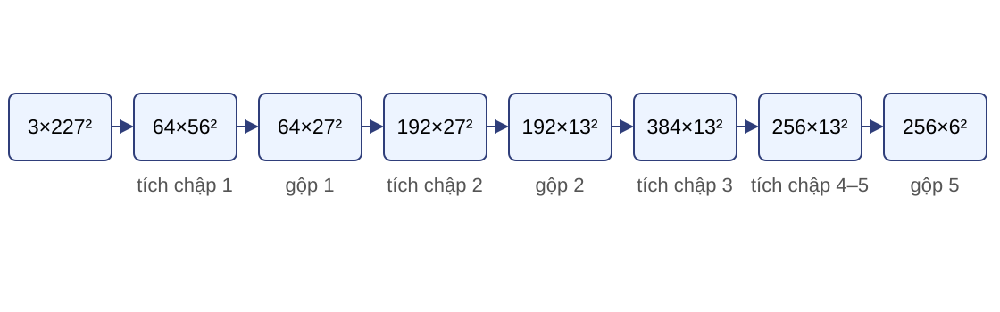
Tích chập 3: $384×13^2$; tích chập 4–5: $256×13^2$; gộp cuối: $256×6^2=9216$ phần tử.
Dùng công thức lấy phần nguyên dưới cho từng phép tích chập và gộp. Dữ kiện 9216 được chuyển nguyên sang phép đếm FC6.Nguồn: lec09_cnn_architectures.pdf , PDF 8; số đã tính lại.
FC6 nối 9216 phần tử với 4096 đơn vị $$|W_{\mathrm{FC6}}|=9216\times4096=37\,748\,736.$$
Có độ lệch 37.748.736 + 4096
Kích hoạt đầu ra có 4096 phần tử nhưng ma trận trọng số nối với toàn bộ 9216 đầu vào.
Ký hiệu $|W_{\mathrm{FC6}}|$ chỉ đếm trọng số. Tổng tham số của tầng là 37.752.832 khi cộng độ lệch.Nguồn: lec09_cnn_architectures.pdf , PDF 8–9; số đã tính lại.
Tổng tham số phải tính cùng một quy ước $$P_1=64(3·11^2+1)=23\,296,\qquad P_2=192(64·5^2+1)=307\,392.$$
Khối Tham số có độ lệch Năm tầng tích chập 2.469.696 FC6 37.752.832 FC7 16.781.312 FC8 4.097.000 Tổng 61.100.840
Hai phép tính đại diện dùng cùng quy ước có độ lệch. Tổng thuộc bản sửa đổi với tích chập 1 có 64 kênh; không ghép với bản gốc chia kênh trên hai GPU.Nguồn: tính lại từ lec09_cnn_architectures.pdf , PDF 8.
Tính MAC từ kích thước đầu ra và nhân Tích chập 1 $56^2·64·3·11^2$
= 72.855.552 MAC
Tích chập 2 $27^2·192·64·5^2$
= 223.948.800 MAC
$$\operatorname{MAC}_{\Sigma}=716\,767\,232.$$
Tổng là tổng MAC của năm tầng tích chập và ba tầng đầy đủ; không cộng độ lệch, phép so sánh trong gộp hay hàm kích hoạt.
Tích chập 2 lớn nhất trong dấu vết; FC6 có 37.748.736 MAC. Mỗi số dùng dấu vết kích thước và đặc tả toán tử ở các trang ngay trước.Nguồn: tính lại từ lec09_cnn_architectures.pdf , PDF 8–9.
Các thay đổi của AlexNet xử lý các nút thắt khác nhau ReLU Không bão hòa trên vùng dương như sigmoid.
Gộp cực đại Giảm độ phân giải.
Bỏ nút ngẫu nhiên (Dropout) Điều chuẩn tầng đầy đủ khi huấn luyện.
GPU Cho phép thực thi mô hình lớn.
Bản gốc dùng hai GPU do giới hạn bộ nhớ thời điểm đó. Bỏ nút ngẫu nhiên chỉ hoạt động ngẫu nhiên khi huấn luyện; Bài 03 đã trình bày cơ chế chi tiết.Nguồn: lec09_cnn_architectures.pdf , PDF 5–7; giáo trình, PDF 140–142.
Tham số và MAC tập trung ở hai nơi khác nhau Câu hỏi: Vì sao FC6 giữ nhiều tham số?
Câu hỏi: Vì sao tích chập 2 giữ nhiều MAC?
FC6 nối mọi cặp đầu vào–đầu ra; tích chập 2 tái dùng trọng số tại $27^2$ vị trí.
Kết luận tách dung lượng mô hình khỏi chi phí áp dụng. VGG tiếp theo chuẩn hóa phần tích chập thành khối lặp.Nguồn: lec09_cnn_architectures.pdf , PDF 9.
VGG thay tầng riêng lẻ bằng năm khối lặp 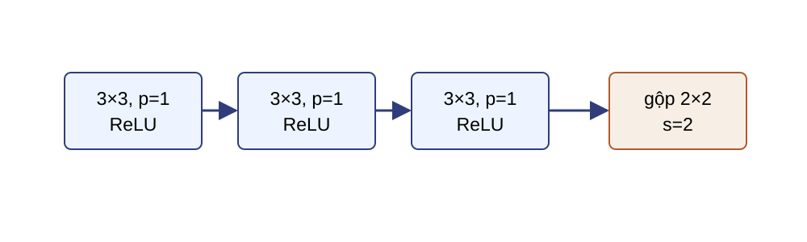
VGG-16 dùng số tầng tích chập theo khối là 2, 2, 3, 3, 3; mỗi khối kết thúc bằng gộp 2×2, bước trượt 2.
Mỗi tích chập 3×3 dùng đệm 1, bước trượt 1. Quy tắc lặp thay cho việc chọn riêng từng tầng như AlexNet.Nguồn: lec09_cnn_architectures.pdf , PDF 11–12; giáo trình, PDF 143–146.
Ba nhân 3×3 nhìn vùng 7×7 $$r_0=1,\qquad r_l=r_{l-1}+(3-1),\qquad (r_1,r_2,r_3)=(3,5,7).$$
Điều kiện: ba tầng đang xét đều có bước trượt 1 và độ giãn 1; bước trượt hoặc độ giãn ở tầng trước làm đổi công thức tích lũy.
Mỗi tầng thêm hai điểm theo mỗi chiều. Hai ReLU nằm giữa ba tích chập nên chuỗi có thêm hai phép biến đổi phi tuyến so với một tầng 7×7.Nguồn: lec09_cnn_architectures.pdf , PDF 12.
Ba nhân nhỏ dùng ít trọng số hơn một nhân lớn $$1-\frac{27}{49}=44{,}9\%.$$
Điều kiện: mỗi tầng có $K$ kênh vào và $K$ kênh ra; không tính độ lệch.
Phép so sánh giữ nguyên số kênh qua cả ba tầng. Không suy rộng tỷ lệ này cho khối đổi số kênh.Nguồn: lec09_cnn_architectures.pdf , PDF 12; số đã tính lại.
VGG-16 giảm nửa độ phân giải qua năm khối 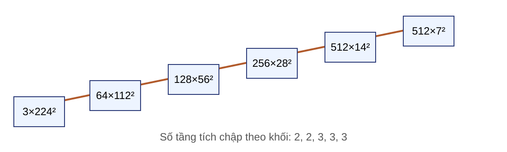
Phần thân: 2–2–3–3–3 tầng tích chập; phần đầu: làm phẳng → FC6 → FC7 → FC8.
Dấu vết không gian là 224,112,56,28,14,7; số kênh sau các khối là 64,128,256,512,512. Tensor trước phần đầu là $512×7×7$.Nguồn: giáo trình, PDF 143–146; lec09_cnn_architectures.pdf , PDF 11–14; hình vẽ lại.
Khối đều đặn vẫn giữ chi phí của đầu đầy đủ Lợi ích Quy tắc thiết kế và trường tiếp nhận rõ.
Chi phí Thêm tầng tạo thêm kích hoạt trung gian.
Giới hạn Đầu đầy đủ vẫn giữ nhiều tham số.
Câu hỏi: Có thể phân bổ nhiều kích thước nhân trong cùng một khối mà vẫn kiểm soát chi phí không?
Inception trả lời bằng nhánh song song và giảm kênh trước các nhân lớn.Nguồn: lec09_cnn_architectures.pdf , PDF 13–14.
Một tầng hoặc chuỗi tầng chỉ dùng một kích thước nhân ở mỗi tầng Nhân 1×1: trộn kênh
Nhân 3×3: vùng cục bộ
Nhân 5×5: vùng rộng hơn
Inception áp dụng các phép biến đổi song song rồi ghép kết quả.
Ta không khẳng định một kích thước là tốt nhất. Mỗi nhánh có số kênh riêng để phân bổ dung lượng.Nguồn: lec09_cnn_architectures.pdf , PDF 18; giáo trình, PDF 149–150.
Phần gốc GoogLeNet có ba tầng tích chập 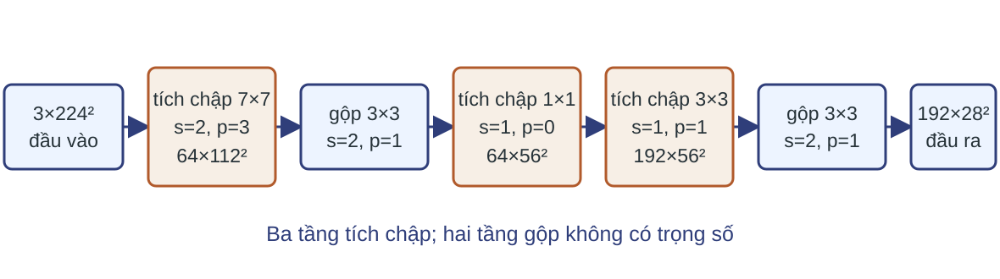
Ba tầng tích chập có $3·64·7^2+64·64·1^2+64·192·3^2=124.096$ trọng số, không tính độ lệch.
Hai tầng gộp không có trọng số. Dấu vết giảm ảnh từ $3×224^2$ xuống $192×28^2$ trước cụm Inception đầu tiên.Nguồn: lec09_cnn_architectures.pdf , PDF 16–17; số đã tính lại.
Khối Inception khóa hình học trước khi ghép 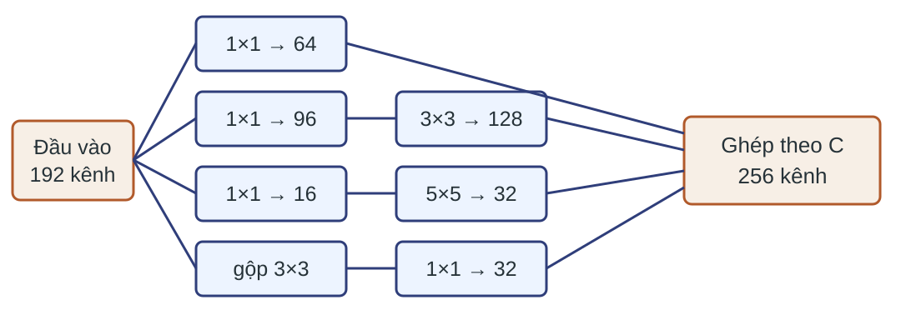
Mọi nhánh dùng bước trượt 1; đệm lần lượt là 0 cho 1×1, 1 cho 3×3, 2 cho 5×5 và 1 cho gộp 3×3.
Đầu vào khối là $N×192×H×W$. Bốn nhánh phát ra 64, 128, 32 và 32 kênh; hai nhánh nhân lớn giảm kênh xuống 96 và 16 trước khi tính.Nguồn: lec09_cnn_architectures.pdf , PDF 18; giáo trình, PDF 149–151; hình vẽ lại.
Ghép bốn nhánh theo trục kênh $$Y_1:N×64×H×W,\quad Y_2:N×128×H×W,$$
$$Y_3,Y_4:N×32×H×W,\qquad C_Y=64+128+32+32=256.$$
Ghép theo trục kênh $C$ tạo $Y:N×256×H×W$; ba trục $N,H,W$ phải bằng nhau.
Phép ghép cộng độ dài trên trục kênh. Khác phép cộng thặng dư, số kênh của các nhánh không cần bằng nhau.Nguồn: giáo trình, PDF 150–151.
Giảm kênh giảm trọng số và MAC của các tích chập Có giảm kênh $|W|=163\,328$
Không giảm kênh $|W|=393\,216$
MAC của các tích chập: $$\operatorname{MAC}=H_s\cdot W_s\cdot|W|,$$ với $H_s,W_s$ là kích thước không gian đầu ra; $|W|$ là số trọng số của các tích chập trong khối. Công thức chỉ đúng khi các tích chập cùng kích thước đầu ra.
Hai cấu hình giữ cùng $H,W$ và cùng số kênh ra 64/128/32/32; tỷ lệ giảm là 2,41 lần.
Đây là trọng số và MAC của riêng các tầng tích chập trong khối, không phải tổng chi phí của khối vì chưa đếm phép gộp, kích hoạt hay truy cập bộ nhớ. Số 163.328 gồm đủ bốn nhánh: $192·64=12.288$; $192·96+96·128·9=18.432+110.592=129.024$; $192·16+16·32·25=3.072+12.800=15.872$; $192·32=6.144$. Tổng $12.288+129.024+15.872+6.144=163.328$.Nguồn: tính lại từ giáo trình, PDF 150–151.
GoogLeNet xếp chín khối Inception thành ba cụm 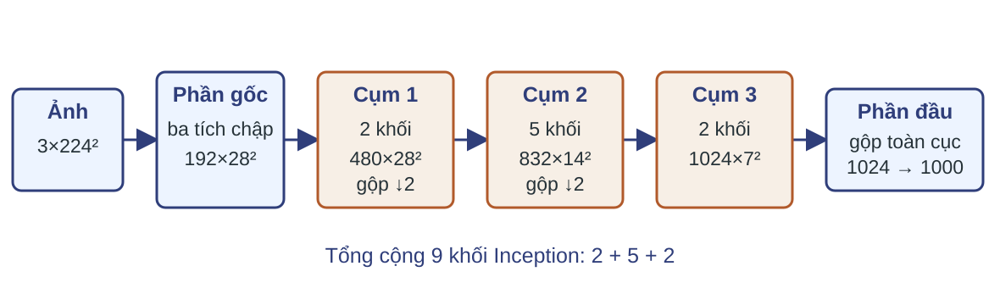
Phần gốc kết thúc ở $192×28^2$. Ba cụm có 2, 5 và 2 khối; các phép gộp xen giữa giảm 28 xuống 14 rồi 7. Gộp trung bình toàn cục tạo vectơ 1024 chiều trước tầng phân loại.Nguồn: giáo trình, PDF 149–152; hình vẽ lại.
Gộp toàn cục thay chuỗi tầng đầy đủ lớn 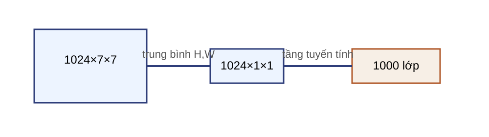
GoogLeNet vẫn có tầng tuyến tính $1024\rightarrow1000$: 1.024.000 trọng số.
Riêng FC6 của VGG: $25088·4096=102.760.448$ trọng số.
Gộp toàn cục thay chuỗi tầng đầy đủ lớn, không loại bỏ tầng tuyến tính phân loại cuối. Quan sát FC6 ở L05-10: tham số tập trung ở tầng nối mọi cặp đầu vào–đầu ra; gộp toàn cục cắt đúng nơi tập trung đó. Hai thành phần được so theo trọng số nhưng không có cùng chức năng đầu ra; phép so chỉ minh họa quy mô ma trận.Nguồn: lec09_cnn_architectures.pdf , PDF 20–23; số đã tính lại.
Phép ghép kiểm tra ba trục ngoài trục kênh Câu hỏi: Nhánh $N×32×(H-2)×W$ có ghép trực tiếp với ba nhánh $N×C_i×H×W$ không?
Không. Phải sửa vùng đệm để cùng $N,H,W$ rồi mới ghép theo $C$.
Phép ghép cho phép số kênh khác nhau. Sau khi khép cụm Inception, phần tiếp theo xét chuẩn hóa theo lô và sự khác nhau giữa huấn luyện với suy luận.Nguồn: lec09_cnn_architectures.pdf , PDF 18–20.
Mạng sâu làm thang kích hoạt thay đổi trong lúc học Mỗi cập nhật trọng số đổi đầu vào của tầng sau.
Các kênh có thể có trung bình và phương sai rất khác.
Chuẩn hóa theo lô thực hiện một phép biến đổi có tham số; “dịch chuyển đồng biến nội bộ” không giải thích đầy đủ cơ chế.
Động cơ lịch sử chỉ là trực giác. Phép tính và trạng thái mô hình mới là các đại lượng có thể kiểm tra.Nguồn: lec10_training.pdf , PDF 25–26; giáo trình, PDF 153–158.
Chuẩn hóa theo lô xử lý riêng từng kênh Ví dụ: $X:8×64×28×28$ cho $NHW=8·28·28=6272$ giá trị ở mỗi kênh.
$$\mu_c=\frac{1}{NHW}\sum_{n,h,w}X_{nchw},\qquad \sigma_c^2=\frac{1}{NHW}\sum_{n,h,w}(X_{nchw}-\mu_c)^2,$$
$$Y_{nchw}=\gamma_c\frac{X_{nchw}-\mu_c}{\sqrt{\sigma_c^2+\epsilon}}+\beta_c.$$
Ví dụ cụ thể khóa ba trục giảm trước khi tổng quát hóa công thức. Đây là lượt xuôi khi huấn luyện: phương sai dùng mẫu số $NHW$, tức phương sai chệch của lô hiện tại. $\epsilon>0$ là cấu hình cố định; cách ước lượng thống kê cố định và tham số quán tính phụ thuộc khung phần mềm.Nguồn: giáo trình, PDF 154–156.
Trực quan hóa trục giảm và phát rộng theo kênh 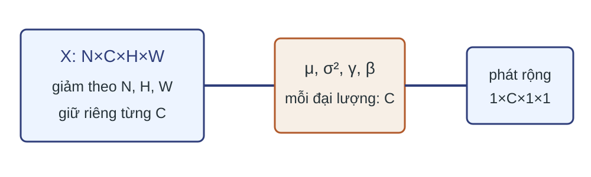
Ba trục giảm là lô, cao và rộng; trục kênh giữ riêng. $\gamma,\beta:64$ phát rộng thành $1×64×1×1$.
Hình minh họa ví dụ $8×64×28×28$ ở trang trước: mỗi kênh gom một trung bình, một phương sai, một $\gamma$ và một $\beta$. Phép phát rộng theo kênh cho phép nhân và cộng trực tiếp trên toàn tensor.Nguồn: giáo trình, PDF 155–156; hình vẽ lại.
Chuẩn hóa theo lô đổi nguồn thống kê giữa hai chế độ 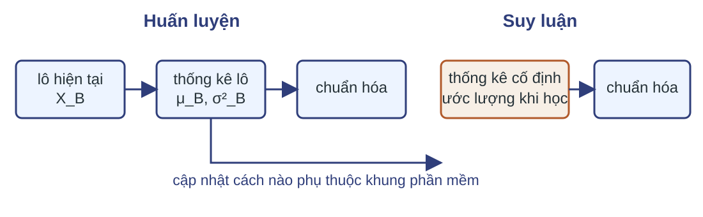
Huấn luyện dùng thống kê của lô hiện tại; suy luận dùng thống kê cố định đã được ước lượng trong huấn luyện.
Cách cập nhật thống kê cố định và tham số quán tính phụ thuộc khung phần mềm. Suy luận không tính lại thống kê từ một ảnh và không quét trực tiếp toàn tập huấn luyện; $\gamma$ và $\beta$ vẫn được dùng.Nguồn: lec10_training.pdf , PDF 27–28; giáo trình, PDF 156–158.
Chế độ và thành phần lô cùng ảnh hưởng đầu ra chuẩn hóa Huấn luyện Dùng thống kê lô hiện tại.
Suy luận Dùng thống kê cố định.
Độ nhạy Lô nhỏ hoặc thành phần lô đổi có thể làm thống kê nhiễu.
Câu hỏi: Cùng một ảnh có thể cho hai đầu ra khác nhau khi ghép với hai lô huấn luyện khác nhau không?
Có, vì trung bình và phương sai của lô có thể đổi theo các mẫu đi cùng ảnh. Khi suy luận, dùng thống kê cố định để đầu ra không phụ thuộc các ảnh khác trong lô. Chuẩn hóa kiểm soát thang kích hoạt; ResNet tiếp theo bổ sung một đường truyền trực tiếp qua nhánh tắt.Nguồn: lec10_training.pdf , PDF 27–31; giáo trình, PDF 156–158.
Thêm tầng có thể làm lỗi huấn luyện tăng 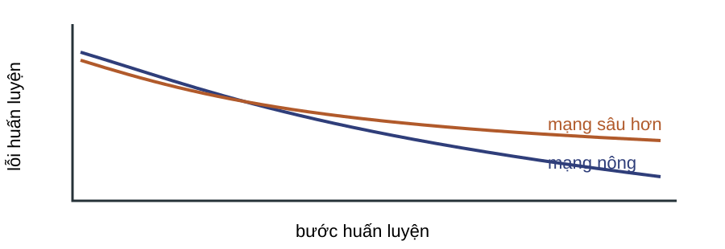
Suy giảm là lỗi huấn luyện xấu hơn khi thêm tầng; không đồng nhất với quá khớp hoặc đạo hàm triệt tiêu.
Một mạng sâu hơn về biểu diễn có thể chứa nghiệm của mạng nông nếu các tầng thêm học ánh xạ đồng nhất, nhưng tối ưu không nhất thiết tìm được nghiệm đó.Nguồn: lec09_cnn_architectures.pdf , PDF 26–29; giáo trình, PDF 158–159; đồ thị khái niệm vẽ lại.
Khối thặng dư học phần điều chỉnh 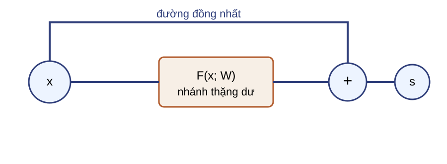
$$s=x+F(x;W).$$
$s$ là giá trị ngay sau phép cộng, trước một hàm kích hoạt nếu khối có hậu kích hoạt. Nếu ánh xạ cần học gần đồng nhất, nhánh chính chỉ cần biểu diễn phần sai khác quanh không.Nguồn: lec09_cnn_architectures.pdf , PDF 29; giáo trình, PDF 159–160; hình vẽ lại.
Phép cộng yêu cầu hai nhánh cùng kích thước $$x,F(x;W)\in\mathbb{R}^{N×C×H×W}.$$
Câu hỏi: Phép cộng khác phép ghép Inception ở điều kiện kích thước nào?
Cộng yêu cầu cùng $N,C,H,W$; ghép theo $C$ chỉ yêu cầu cùng $N,H,W$.
Không dùng phát rộng để vá số kênh hoặc kích thước không gian. Khi đổi kích thước, nhánh tắt cần phép chiếu.Nguồn: giáo trình, PDF 159–160.
Phép chiếu 1×1 làm hai nhánh khớp kích thước 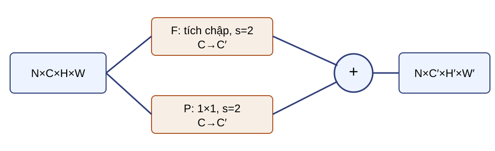
$$s=P(x)+F(x;W),\quad P:\ N×C×H×W\rightarrow N×C'×H'×W'.$$
Khối đầu của giai đoạn mới thường giảm nửa không gian và tăng kênh. Nhánh chính và phép chiếu đều phải tạo $N×C'×H'×W'$ trước phép cộng.Nguồn: giáo trình, PDF 160–161; hình vẽ lại.
Ma trận đạo hàm phụ thuộc nhánh tắt và vị trí kích hoạt Vectơ hóa tensor: $x\in\mathbb{R}^{d_{in}},\ s\in\mathbb{R}^{d_{out}}$; dùng quy ước gradient cột và tích Jacobian chuyển vị–vectơ đã học ở Bài 02–03.
$$\bar{x}=J_s^{\top}\bar{s},\qquad J_F,J_P\in\mathbb{R}^{d_{out}\times d_{in}}.$$
Đặt $J_F=\partial F/\partial x$ và $J_P=\partial P/\partial x$. Với quy ước gradient cột, lan truyền ngược dùng tích Jacobian chuyển vị–vectơ $J_s^\top\bar{s}$, nên $\bar{x}=J_s^\top\bar{s}$. Khi kích thước đổi, $J_P$ và $J_F$ có thể là ma trận chữ nhật nhưng phải cùng kích thước để cộng; hạng $I$ chỉ có ở nhánh đồng nhất với $d_{out}=d_{in}$. Kiểm tra trực giác: nếu $F=0$ thì $\bar{x}=\bar{s}$, tức gradient đi qua nguyên vẹn nhánh tắt. Trường hợp hậu kích hoạt: đầu ra khối đi qua ReLU nên ma trận đạo hàm nhận thêm nhân trái bởi $D_{\mathrm{ReLU}}(s)$, ma trận đạo hàm chéo; công thức đầy đủ là $J_z=D_{\mathrm{ReLU}}(s)J_s$. Đường trực tiếp không bảo đảm tổng ma trận có điều kiện tốt.Nguồn: suy ra từ công thức khối thặng dư; đối chiếu lec09_cnn_architectures.pdf , PDF 29.
So một tầng 3×3 đơn lẻ với toàn bộ nhánh cổ chai Một ánh xạ 3×3: 256→256 $256·256·9=589\,824$
Cả nhánh: 256→64→64→256 $16\,384+36\,864+16\,384=69\,632$
Tỷ lệ 8,47 chỉ so một ánh xạ 3×3 với cả nhánh cổ chai; không phải tỷ lệ giữa hai khối hoàn chỉnh.
Mỗi trọng số tạo một MAC tại mỗi vị trí đầu ra; tổng trên bản đồ bằng số trọng số nhân $H·W$; điều kiện là bước trượt 1 khi dùng $|W|·H·W$. Khối cơ bản hoàn chỉnh có hai ánh xạ 3×3 nên không dùng trực tiếp tỷ lệ 8,47 cho phép so khối–khối.Nguồn: lec09_cnn_architectures.pdf , PDF 30; số đã tính lại.
Khối cơ bản và khối cổ chai dùng hai mẫu nhánh 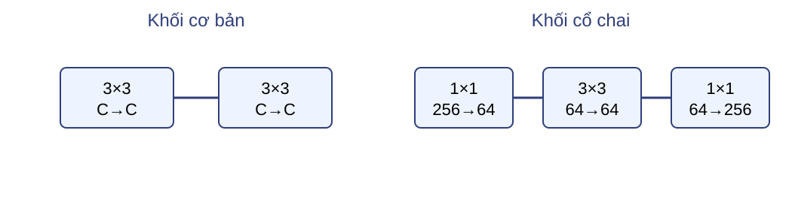
Khối cơ bản: hai tích chập 3×3.
Khối cổ chai: 1×1 giảm kênh → 3×3 → 1×1 khôi phục kênh.
Cả hai mẫu vẫn cần nhánh tắt đồng nhất hoặc phép chiếu để khớp kích thước. Con số 8,47 ở trang trước không so toàn khối cơ bản hai tầng với toàn khối cổ chai.Nguồn: lec09_cnn_architectures.pdf , PDF 30; giáo trình, PDF 161–162; hình vẽ lại.
ResNet-18 dùng bốn giai đoạn với 2–2–2–2 khối 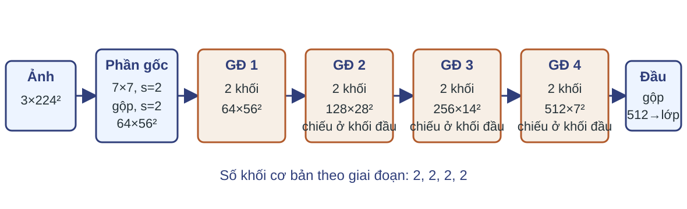
Câu hỏi: Vì sao khối đầu ở giai đoạn 2–4 cần phép chiếu trên nhánh tắt?
Vì mỗi giai đoạn tăng kênh và giảm nửa $H,W$; $P(x)$ phải khớp $F(x)$ trước khi cộng.
Quy tắc đếm 18 tầng: một tích chập đầu, $4·2·2=16$ tích chập trong tám khối cơ bản, và một tầng đầy đủ cuối. Không đếm BN, ReLU, gộp hoặc phép cộng; ba phép chiếu vẫn có tham số và MAC, chỉ không tính vào tên “18 tầng” theo quy ước kiến trúc. Thân ResNet đã học có thể tái dùng cho nhiệm vụ mới; trang kế xét hai quyết định khi tái dùng: tham số nào có gradient và mô-đun nào ở chế độ huấn luyện.Nguồn: lec09_cnn_architectures.pdf , PDF 31; giáo trình, PDF 161–163; hình vẽ lại.
Học chuyển giao tách cập nhật tham số khỏi chế độ mô-đun Tình huống: tập ảnh mới nhỏ và gần miền nguồn; thay tầng phân loại bằng đầu mới.
Một cấu hình phổ biến: đặc trưng cố định Thân: không tính gradient, chế độ suy luận.
Đầu mới: có gradient, chế độ huấn luyện.
Tinh chỉnh Chọn tham số có gradient.
Chọn riêng chính sách chuẩn hóa theo lô: cố định hoặc cập nhật thống kê.
Câu hỏi: Khi suy luận cuối cùng, các mô-đun ở chế độ nào?
Tất cả ở chế độ suy luận.
Tất cả mô-đun chuyển sang chế độ suy luận. Việc có gradient và chế độ huấn luyện/suy luận là hai quyết định độc lập; đóng băng tham số không tự đổi hành vi của chuẩn hóa theo lô hoặc bỏ nút ngẫu nhiên.Nguồn: lec09_cnn_architectures.pdf , PDF 44–46.